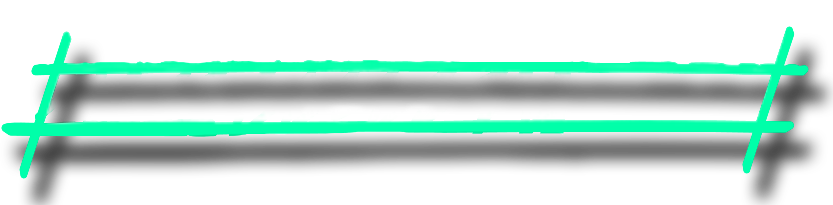

Rotate your iPhone
This experience works best in
landscape
.
Please rotate your phone to continue.
Minimise your Toolbar
For the best experience, minimise your browser’s toolbar in the browser settings.
Tap anywhere to continue.